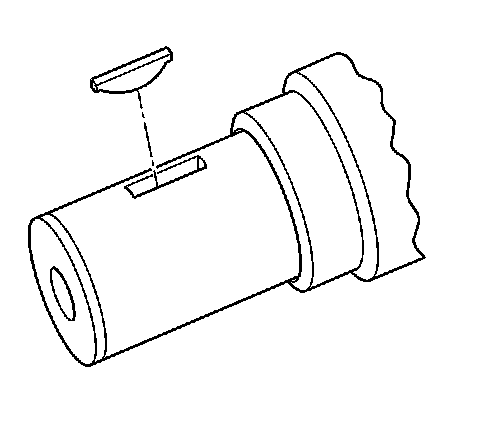
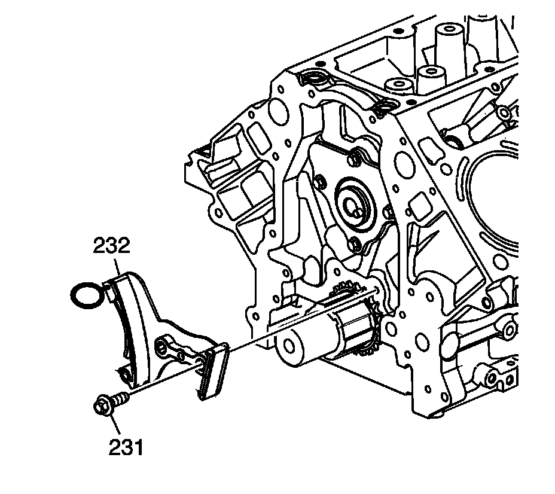
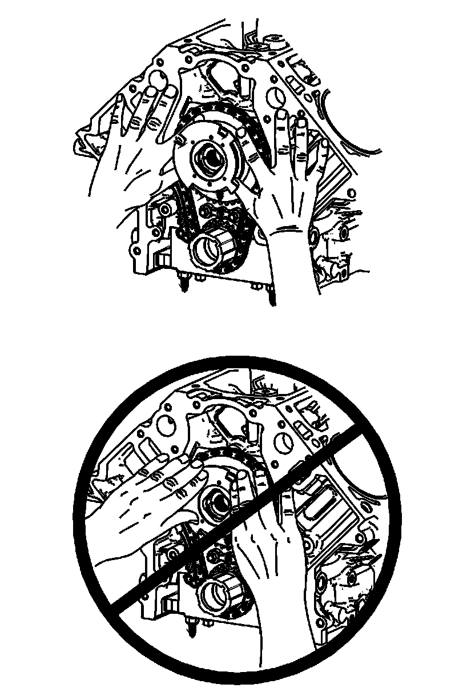
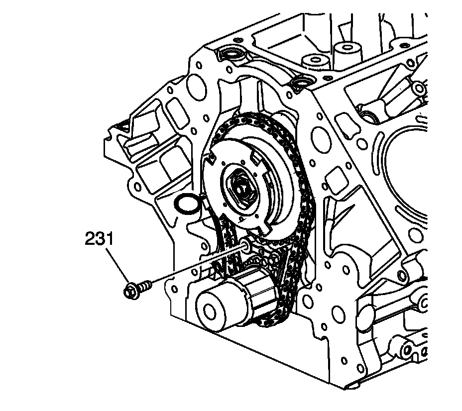
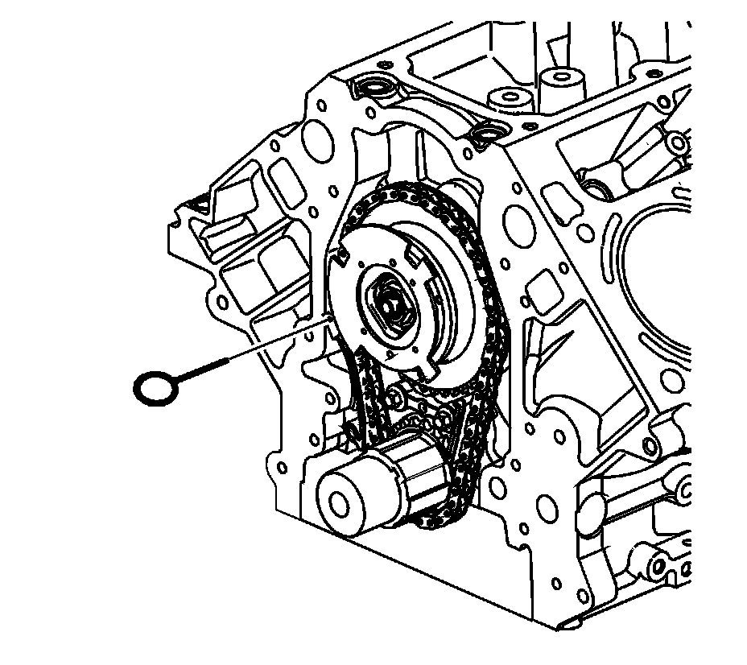
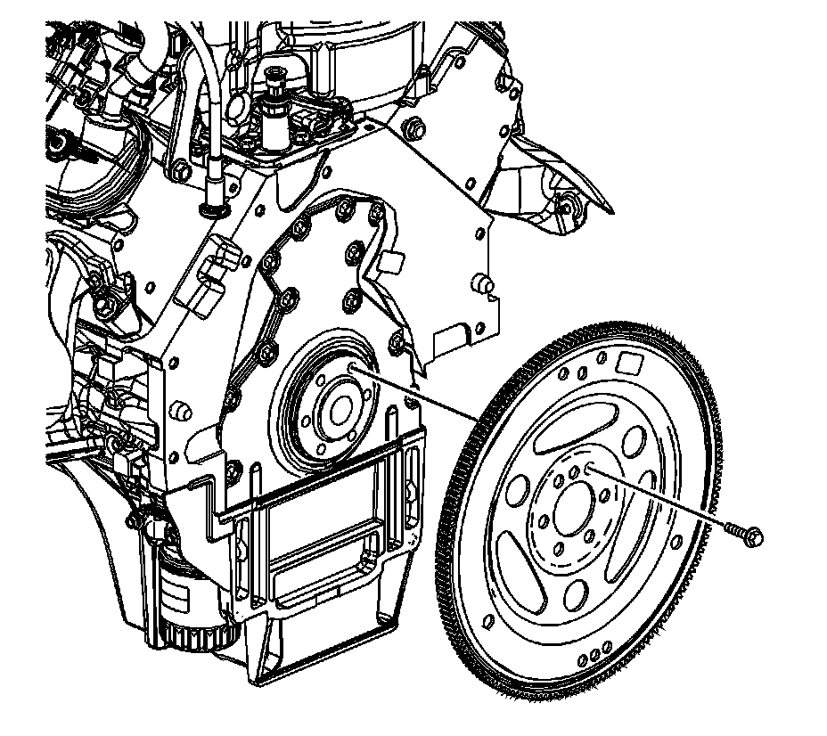

72. Camshaft Position Actuator, and Solenoid Valve Installation
Camshaft Position Actuator and Solenoid Valve Installation
Tools Required
^ EN 46330 Timing Belt Tensioner Retaining Pin
^ J 41478 Crankshaft Front Oil Seal Installer
^ J 41665 Crankshaft Balancer and Sprocket Installer
^ J 42386-A Flywheel Holding Tool
^ J 45059 Angle Meter

1. Install the key into the crankshaft keyway, if previously removed.

2. Tap the key (122) into the keyway until both ends of the key bottom onto the crankshaft.

3. Install the crankshaft sprocket (207) onto the front of the crankshaft. Align the crankshaft key with the crankshaft sprocket keyway.

4. Use the J 41478 (1) and the J 41665 (2) in order to install the crankshaft sprocket. Install the sprocket onto the crankshaft until fully seated against the crankshaft flange.
5. Rotate the crankshaft sprocket until the sprocket alignment mark is in the 12 o'clock position.

6. Compress the timing chain tensioner guide and install the EN 46330.

Notice: Refer to Fastener Notice.
7. Install the timing chain tensioner (232) and left side bolt (231). Do not install the right side bolt at this time. The right side bolt will be installed after the camshaft position (CMP) actuator and chain have been installed onto the engine.

Caution: Refer to Camshaft Position Actuator Removal and Installation Caution.
8. Remove the tie strap (1) from the actuator.

Important:
^ Properly locate the CMP actuator onto the locating pin of the camshaft.
^ The sprocket teeth and timing chain must mesh.
^ The camshaft and the crankshaft sprocket alignment marks MUST be aligned properly.
^ Do not use the CMP solenoid valve again. Install a NEW valve during assembly.
Identify the alignment hole (1) in the rear face of the CMP actuator and the locating pin (2) on the front face of the camshaft.

Caution: Refer to Camshaft Position Actuator Removal and Installation Caution.
9. Install the CMP actuator and timing chain. Align the hole in the rear face of the CMP actuator with the locating pin on the front face of the camshaft. If necessary, rotate the camshaft or crankshaft sprockets in order to align the timing marks. Use care to install the actuator completely onto the front of the camshaft. Position fingers onto the face of the actuator sprocket and push the actuator onto the front of the camshaft. Never push on the reluctor wheel when attempting to install the actuator.

10. Locate a straight edge across the front face of the engine block and inspect for proper installation of the CMP actuator and timing chain. With the CMP actuator properly and completely installed onto the front of camshaft, the timing chain will not protrude beyond the front face of engine block.

11. Install a NEW CMP actuator solenoid valve (234). With the CMP actuator properly positioned onto the camshaft, the CMP actuator solenoid valve can be threaded completely into the camshaft using light hand pressure. Tighten by hand until snug.

12. Inspect the sprockets for proper alignment. The mark on the CMP actuator sprocket (1) should be located in the 6 o'clock position and the mark on the crankshaft sprocket (2) should be located in the 12 o'clock position.

13. Install the right side bolt (231) into the timing chain tensioner.
Tighten the timing chain tensioner bolts to 25 N.m (18 lb ft).

14. Remove the EN 46330.

Important: Do not apply threadlock to the flex plate bolts at this time.
15. Temporarily install the automatic transmission flex plate and bolts.

16. Install the J 42386-A (1) and bolts. Use 1 M10 - 1.5 x 120 mm and 1 M10 - 1.5 x 45 mm bolt for proper tool operation.
Tighten the J 42386-A bolts to 50 N.m (37 lb ft).

17. Tighten the CMP actuator solenoid valve.
1. Tighten the CMP actuator solenoid valve a first pass to 65 N.m (48 lb ft).
2. Tighten the CMP actuator solenoid valve a final pass an additional 90 degrees using the J 45059.
18. Remove the J 42386-A and bolts.
19. Remove the automatic transmission flex plate and bolts.